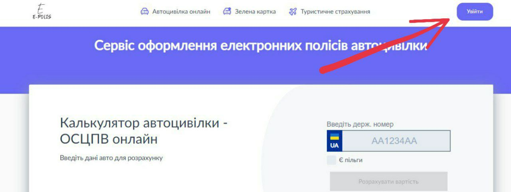
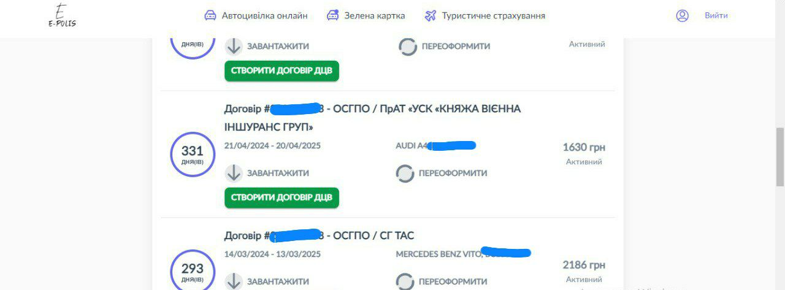
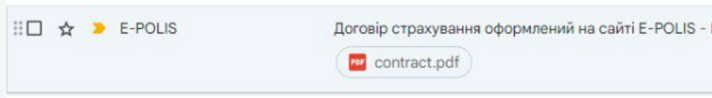
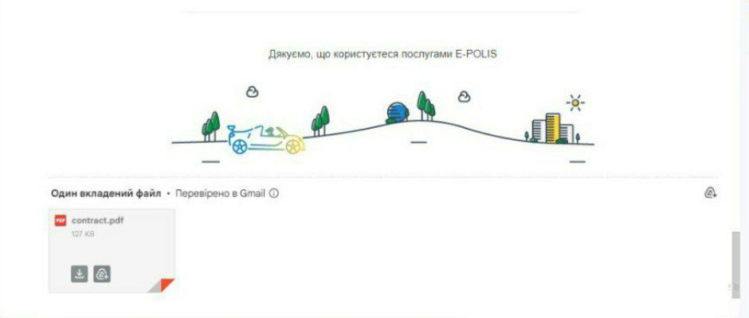

Як роздрукувати електронний поліс автоцивілки?
Даємо відповідь на поширене запитання "як роздрукувати автоцивілку?"

Все насправді дуже просто, як звичайний файл PDF на папері формату А4. Ніяких спеціальних кольорових бланків не потрібно використовувати.
На електронному полісі не передбачені печатки і підписи, тож не потрібно звертатись в страхову компанію для друку.
Сам файл поліса Ви можете знайти і завантажити з електронної пошти або з особистого кабінету.
З особистого кабінету на сайті
Авторизуйтесь в особистому кабінеті
Ви знайдете всі Ваші автомобілі і страховки. Звідси можна завантажити PDF файл поліса і перевірити кількість днів яка залишилась до кінця страховки. Зручно продовжити термін дії страховки. А також за бажанням дооформити ДЦВ (збільшити суму відповідальності по майну)
З електронної пошти
Кожен поліс оформлений на нашому сервісі приходить Вам на електронну пошту
Якщо Ви не пам'ятаєте коли його оформили, здійсніть пошук за ключовими словами: "E-polis", "Страхування", "Поліс" тощо.
Завантажте поліс з вкладення до листа і пустіть його на друк.
Висновок
Роздрукувати електронний поліс автоцивілки дуже просто. Це можна зробити за лічені хвилини, використовуючи один з двох описаних вище способів.
Пам'ятайте, що мати при собі роздрукований поліс автоцивілки не є обов'язковим, але це може бути корисно в деяких ситуаціях.